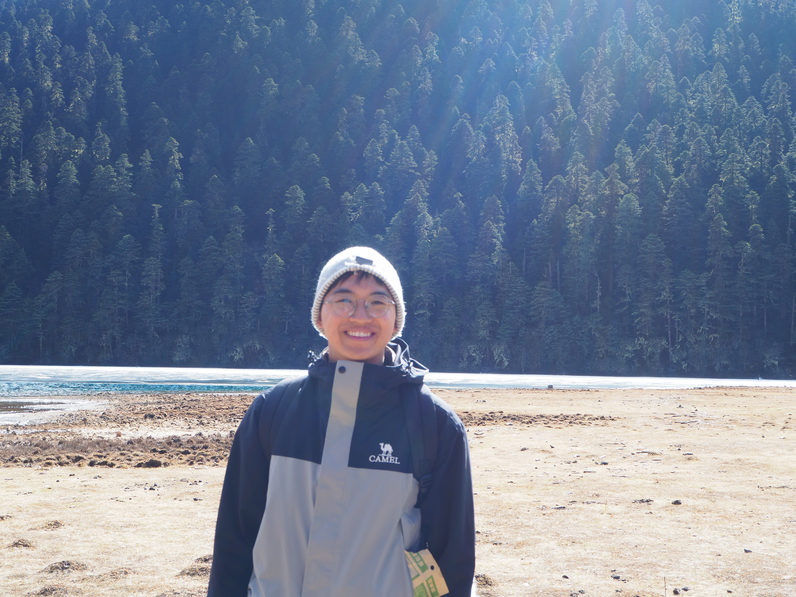

Tianwei Ye
Master Student
Multi-spectral Visual Information Processing Group
Electronic Information School, Wuhan University
Email: twye2001@gmail.com
I am a Master’s student in the Multi-spectral Visual Information Processing Group, Electronic Information School, Wuhan University, under the supervision of Prof. Jiayi Ma and Prof. Yong Ma. Before that, I received my Bachelor’s degree from Central South University in 2024.
I have a broad interest in computer vision and graphics, particularly in 3D vision. I am currently working on 3D shape matching with deep learning and optimization techniques.
I am seeking PhD opportunities starting in Fall 2026 and would be glad to discuss potential research directions. Please feel free to get in touch.
🔥 News
| Nov 08, 2025 | Our Work DcMatch and PDCMatch were accepted to AAAI! |
|---|---|
| Dec 09, 2024 | One paper was accepted to AAAI! |
| Sep 03, 2024 | Start my journey at Wuhan University! |